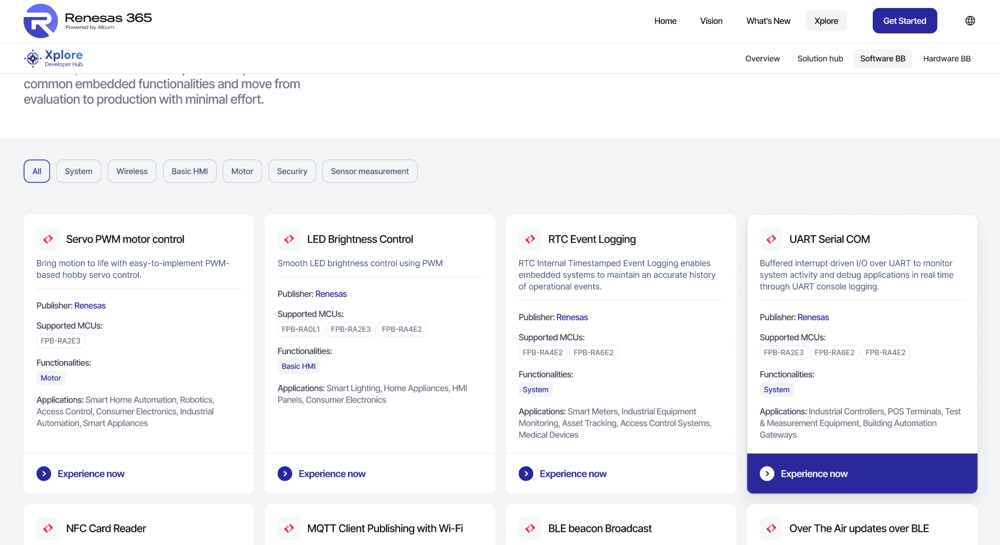
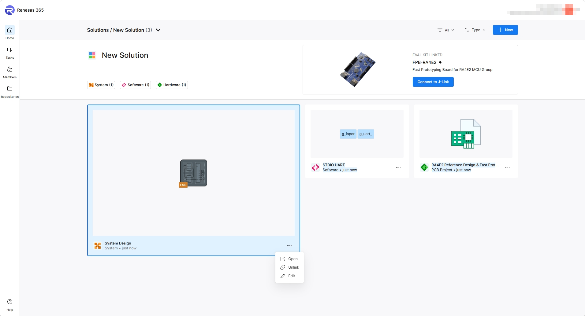
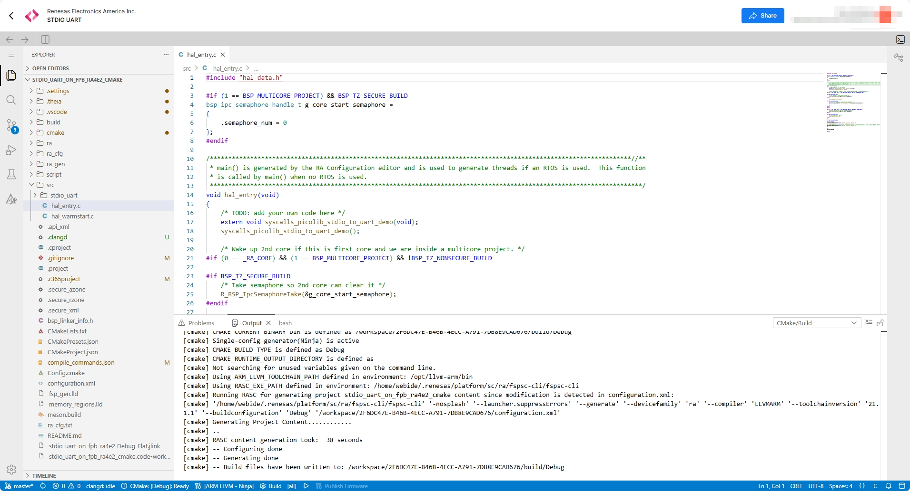
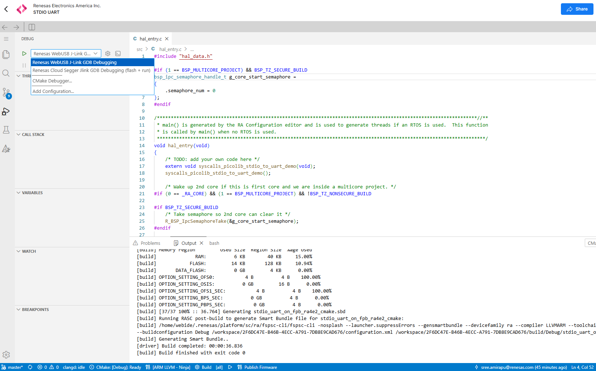
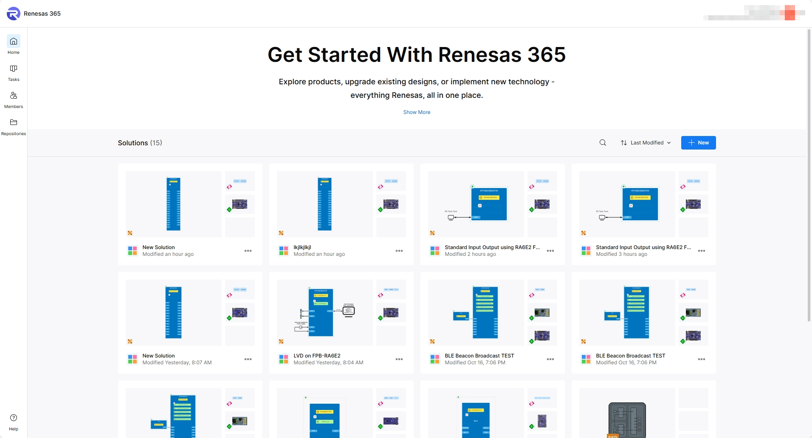
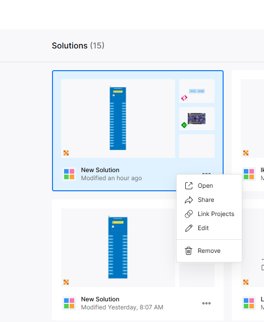

MQTT DA16600
View the application project documentation.
Open documentationRenesas RA Family
Quick Start Guide and links to the application projects' documentation.
Links to the application projects' documentation.
View the application project documentation.
Open documentationView the application project documentation.
Open documentationView the application project documentation.
Open documentationView the application project documentation.
Open documentationView the application project documentation.
Open documentationView the application project documentation.
Open documentationView the application project documentation.
Open documentationUse this guide to open an Xplore project in Renesas 365, build and debug it, and save a modified solution.
Select the project from the Xplore landing page.

Figure 1. Dashboard Sign in
Open the Web IDE.

Figure 2. Opening the Web IDE
When the IDE is ready, build the project by clicking on ‘Build’.

Figure 3. Building the Project
When the build is complete, select the ‘Debug’ view and choose ‘Renesas WebUSB J-Link GDB Debugging’. Click the green arrow to connect to j-link.

Figure 4. Flashing the Board
Once flashing is complete, click on the blue ‘continue’ icon to run the project on the board.

Figure 5. Running the project
To modify the project, make changes to the files and build, flash and run the projects as defined in section 2.
The modified project is saved in R365 as “New Solution”.

Figure 6. R365 New solution view
The new solution name and properties can be edited in place.

Figure 7. Workspace Properties
General Precautions in the Handling of Microprocessing Unit and Microcontroller Unit Products
The following usage notes are applicable to all Microprocessing unit and Microcontroller unit products from Renesas. For detailed usage notes on the products covered by this document, refer to the relevant sections of the document as well as any technical updates that have been issued for the products.
1. Precaution against Electrostatic Discharge (ESD)
A strong electrical field, when exposed to a CMOS device, can cause destruction of the gate oxide and ultimately degrade the device operation. Steps must be taken to stop the generation of static electricity as much as possible, and quickly dissipate it when it occurs. Environmental control must be adequate. When it is dry, a humidifier should be used. This is recommended to avoid using insulators that can easily build up static electricity. Semiconductor devices must be stored and transported in an anti-static container, static shielding bag or conductive material. All test and measurement tools including work benches and floors must be grounded. The operator must also be grounded using a wrist strap. Semiconductor devices must not be touched with bare hands. Similar precautions must be taken for printed circuit boards with mounted semiconductor devices.
2. Processing at power-on
The state of the product is undefined at the time when power is supplied. The states of internal circuits in the LSI are indeterminate and the states of register settings and pins are undefined at the time when power is supplied. In a finished product where the reset signal is applied to the external reset pin, the states of pins are not guaranteed from the time when power is supplied until the reset process is completed. In a similar way, the states of pins in a product that is reset by an on-chip power-on reset function are not guaranteed from the time when power is supplied until the power reaches the level at which resetting is specified.
3. Input of signal during power-off state
Do not input signals or an I/O pull-up power supply while the device is powered off. The current injection that results from input of such a signal or I/O pull-up power supply may cause malfunction and the abnormal current that passes in the device at this time may cause degradation of internal elements. Follow the guideline for input signal during power-off state as described in your product documentation.
4. Handling of unused pins
Handle unused pins in accordance with the directions given under handling of unused pins in the manual. The input pins of CMOS products are generally in the high-impedance state. In operation with an unused pin in the open-circuit state, extra electromagnetic noise is induced in the vicinity of the LSI, an associated shoot-through current flows internally, and malfunctions occur due to the false recognition of the pin state as an input signal become possible.
5. Clock signals
After applying a reset, only release the reset line after the operating clock signal becomes stable. When switching the clock signal during program execution, wait until the target clock signal is stabilized. When the clock signal is generated with an external resonator or from an external oscillator during a reset, ensure that the reset line is only released after full stabilization of the clock signal. Additionally, when switching to a clock signal produced with an external resonator or by an external oscillator while program execution is in progress, wait until the target clock signal is stable.
6. Voltage application waveform at input pin
Waveform distortion due to input noise or a reflected wave may cause malfunction. If the input of the CMOS device stays in the area between VIL (Max.) and VIH (Min.) due to noise, for example, the device may malfunction. Take care to prevent chattering noise from entering the device when the input level is fixed, and also in the transition period when the input level passes through the area between VIL (Max.) and VIH (Min.).
7. Prohibition of access to reserved addresses
Access to reserved addresses is prohibited. The reserved addresses are provided for possible future expansion of functions. Do not access these addresses as the correct operation of the LSI is not guaranteed.
8. Differences between products
Before changing from one product to another, for example to a product with a different part number, confirm that the change will not lead to problems. The characteristics of a microprocessing unit or microcontroller unit products in the same group but having a different part number might differ in terms of internal memory capacity, layout pattern, and other factors, which can affect the ranges of electrical characteristics, such as characteristic values, operating margins, immunity to noise, and amount of radiated noise. When changing to a product with a different part number, implement a system-evaluation test for the given product.
Notice
1. Descriptions of circuits, software and other related information in this document are provided only to illustrate the operation of semiconductor products and application examples. You are fully responsible for the incorporation or any other use of the circuits, software, and information in the design of your product or system. Renesas Electronics disclaims any and all liability for any losses and damages incurred by you or third parties arising from the use of these circuits, software, or information.
2. Renesas Electronics hereby expressly disclaims any warranties against and liability for infringement or any other claims involving patents, copyrights, or other intellectual property rights of third parties, by or arising from the use of Renesas Electronics products or technical information described in this document, including but not limited to, the product data, drawings, charts, programs, algorithms, and application examples.
3. No license, express, implied or otherwise, is granted hereby under any patents, copyrights or other intellectual property rights of Renesas Electronics or others.
4. You shall be responsible for determining what licenses are required from any third parties, and obtaining such licenses for the lawful import, export, manufacture, sales, utilization, distribution or other disposal of any products incorporating Renesas Electronics products, if required.
5. You shall not alter, modify, copy, or reverse engineer any Renesas Electronics product, whether in whole or in part. Renesas Electronics disclaims any and all liability for any losses or damages incurred by you or third parties arising from such alteration, modification, copying or reverse engineering.
6. Renesas Electronics products are classified according to the following two quality grades: “Standard” and “High Quality”. The intended applications for each Renesas Electronics product depends on the product’s quality grade, as indicated below.
"Standard": Computers; office equipment; communications equipment; test and measurement equipment; audio and visual equipment; home electronic appliances; machine tools; personal electronic equipment; industrial robots; etc.
"High Quality": Transportation equipment (automobiles, trains, ships, etc.); traffic control (traffic lights); large-scale communication equipment; key financial terminal systems; safety control equipment; etc.
Unless expressly designated as a high reliability product or a product for harsh environments in a Renesas Electronics data sheet or other Renesas Electronics document, Renesas Electronics products are not intended or authorized for use in products or systems that may pose a direct threat to human life or bodily injury (artificial life support devices or systems; surgical implantations; etc.), or may cause serious property damage (space system; undersea repeaters; nuclear power control systems; aircraft control systems; key plant systems; military equipment; etc.). Renesas Electronics disclaims any and all liability for any damages or losses incurred by you or any third parties arising from the use of any Renesas Electronics product that is inconsistent with any Renesas Electronics data sheet, user’s manual or other Renesas Electronics document.
7. No semiconductor product is absolutely secure. Notwithstanding any security measures or features that may be implemented in Renesas Electronics hardware or software products, Renesas Electronics shall have absolutely no liability arising out of any vulnerability or security breach, including but not limited to any unauthorized access to or use of a Renesas Electronics product or a system that uses a Renesas Electronics product. RENESAS ELECTRONICS DOES NOT WARRANT OR GUARANTEE THAT RENESAS ELECTRONICS PRODUCTS, OR ANY SYSTEMS CREATED USING RENESAS ELECTRONICS PRODUCTS WILL BE INVULNERABLE OR FREE FROM CORRUPTION, ATTACK, VIRUSES, INTERFERENCE, HACKING, DATA LOSS OR THEFT, OR OTHER SECURITY INTRUSION (“Vulnerability Issues”). RENESAS ELECTRONICS DISCLAIMS ANY AND ALL RESPONSIBILITY OR LIABILITY ARISING FROM OR RELATED TO ANY VULNERABILITY ISSUES. FURTHERMORE, TO THE EXTENT PERMITTED BY APPLICABLE LAW, RENESAS ELECTRONICS DISCLAIMS ANY AND ALL WARRANTIES, EXPRESS OR IMPLIED, WITH RESPECT TO THIS DOCUMENT AND ANY RELATED OR ACCOMPANYING SOFTWARE OR HARDWARE, INCLUDING BUT NOT LIMITED TO THE IMPLIED WARRANTIES OF MERCHANTABILITY, OR FITNESS FOR A PARTICULAR PURPOSE.
8. When using Renesas Electronics products, refer to the latest product information (data sheets, user’s manuals, application notes, “General Notes for Handling and Using Semiconductor Devices” in the reliability handbook, etc.), and ensure that usage conditions are within the ranges specified by Renesas Electronics with respect to maximum ratings, operating power supply voltage range, heat dissipation characteristics, installation, etc. Renesas Electronics disclaims any and all liability for any malfunctions, failure or accident arising out of the use of Renesas Electronics products outside of such specified ranges.
9. Although Renesas Electronics endeavors to improve the quality and reliability of Renesas Electronics products, semiconductor products have specific characteristics, such as the occurrence of failure at a certain rate and malfunctions under certain use conditions. Unless designated as a high reliability product or a product for harsh environments in a Renesas Electronics data sheet or other Renesas Electronics document, Renesas Electronics products are not subject to radiation resistance design. You are responsible for implementing safety measures to guard against the possibility of bodily injury, injury or damage caused by fire, and/or danger to the public in the event of a failure or malfunction of Renesas Electronics products, such as safety design for hardware and software, including but not limited to redundancy, fire control and malfunction prevention, appropriate treatment for aging degradation or any other appropriate measures. Because the evaluation of microcomputer software alone is very difficult and impractical, you are responsible for evaluating the safety of the final products or systems manufactured by you.
10. Please contact a Renesas Electronics sales office for details as to environmental matters such as the environmental compatibility of each Renesas Electronics product. You are responsible for carefully and sufficiently investigating applicable laws and regulations that regulate the inclusion or use of controlled substances, including without limitation, the EU RoHS Directive, and using Renesas Electronics products in compliance with all these applicable laws and regulations. Renesas Electronics disclaims any and all liability for damages or losses occurring as a result of your noncompliance with applicable laws and regulations.
11. Renesas Electronics products and technologies shall not be used for or incorporated into any products or systems whose manufacture, use, or sale is prohibited under any applicable domestic or foreign laws or regulations. You shall comply with any applicable export control laws and regulations promulgated and administered by the governments of any countries asserting jurisdiction over the parties or transactions.
12. It is the responsibility of the buyer or distributor of Renesas Electronics products, or any other party who distributes, disposes of, or otherwise sells or transfers the product to a third party, to notify such third party in advance of the contents and conditions set forth in this document.
13. This document shall not be reprinted, reproduced or duplicated in any form, in whole or in part, without prior written consent of Renesas Electronics.
14. Please contact a Renesas Electronics sales office if you have any questions regarding the information contained in this document or Renesas Electronics products.
(Note1) “Renesas Electronics” as used in this document means Renesas Electronics Corporation and also includes its directly or indirectly controlled subsidiaries.
(Note2) “Renesas Electronics product(s)” means any product developed or manufactured by or for Renesas Electronics.
(Rev.5.0-1 October 2020)
| Corporate Headquarters | Contact information | |
|---|---|---|
TOYOSU FORESIA, 3-2-24 Toyosu, |
For further information on a product, technology, the most up-to-date version of a document, or your nearest sales office, please visit: www.renesas.com/contact/. | |
| Trademarks | ||
| Renesas and the Renesas logo are trademarks of Renesas Electronics Corporation. All trademarks and registered trademarks are the property of their respective owners. |